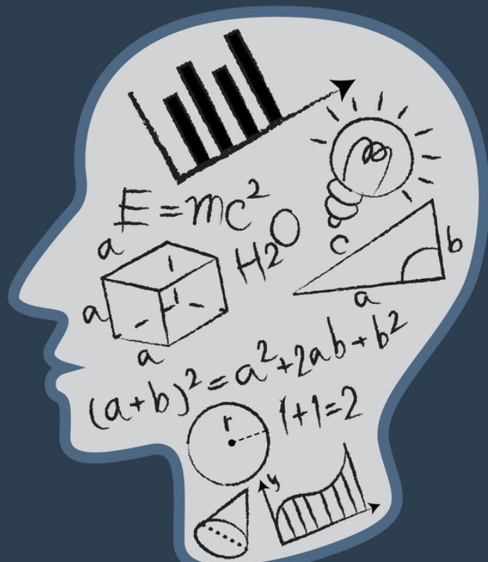

Welcome to My Resume!
Hello there My Name is Said Sheck. I am University Student here at the University of Washington; Where I'm currently studying in the field of Mathematics. In addition I am currently exploring the broad field that is Software Engineering. Where I am currently taking steps to understand the field of Web Development. Hopefully I can futher this exploration by being a part of your proffesional team!